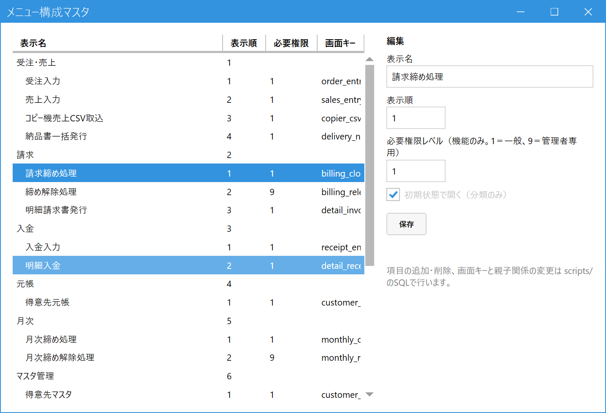

Edit the Menu (Administrator)
When to use this
Use this screen when you want to change the names, order, and who can use (permission level, 権限レベル) the items on the main menu.
For example, if you do not want regular employees to use a certain function (you want it for administrators only), set its required permission level to 9.
Use this screen when you want to change the names, order, and who can use (permission level, 権限レベル) the items on the main menu.
For example, if you do not want regular employees to use a certain function (you want it for administrators only), set its required permission level to 9.
This screen is for administrators only. It appears in the menu only for employees with permission level 9. Changes take effect the next time the main menu is started.
1.Select an item, edit it, and save
In the main menu, open Master Management (マスタ管理), then open Menu Master Management (メニューマスタ管理). Click the item you want to change in the list on the left, and its details appear in "Edit (編集)" on the right.

- Menu list (メニューの一覧): Shows the categories (Orders & Sales, Billing, ... / 受注・売上、請求、…) and the functions within each. "Required permission (必要権限)" is the permission level needed to use that function.
- Click the item you want to change to select it.
- Display name (表示名): The name shown on the main menu.
- Display order (表示順): The sort order (smaller numbers appear higher).
- Required permission level (必要権限レベル) (functions only): 1 = general, 9 = administrators only. The function is shown only to employees whose own permission level is this number or higher.
- Open by default (初期状態で開く) (categories only): Whether that category is shown expanded when the main menu is opened.
- Save (保存): Changes are not applied unless you press this.
2.What you cannot do on this screen
- You cannot add or delete items, change a screen key, or change the parent-child relationship (which category an item belongs to). These require editing the system's configuration files (SQL) directly, so ask the developer in charge.
- Menu settings may return to their initial values when the system is upgraded. If you make large changes, keep a record of what you changed.